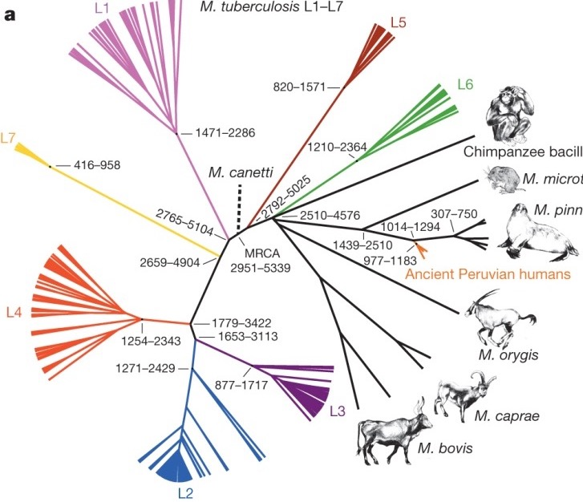
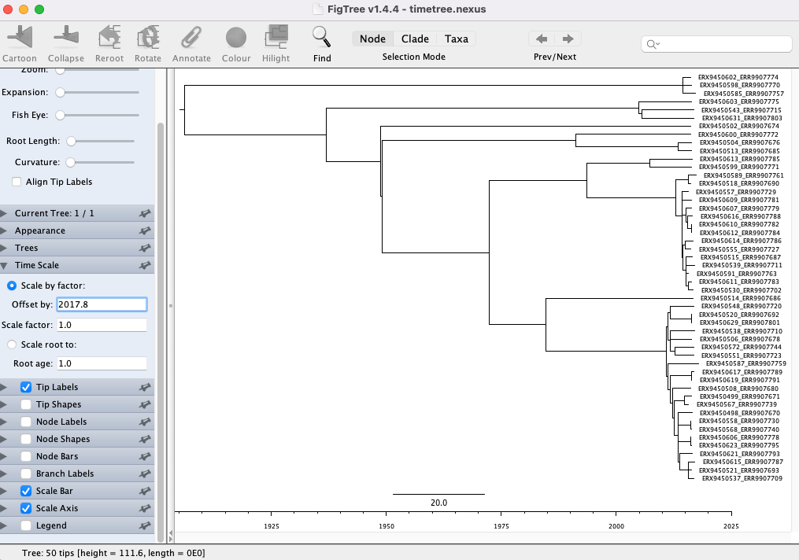

18 Estimating time-scaled phylogenies
- Describe how incorporating temporal data into phylogenetic tree inference can be used to estimate the timing of evolutionary events.
- Understand the different types of tools that can be used to estimate time-scaled phylogenies.
- Learn how to assess whether there is a molecular clock signal in your data.
- Describe how TreeTime can be used to infer a time-scaled phylogenetic tree.
- Generate a time-scaled phylogeny with TreeTime.
- Visualize your time-scaled phylogeny with Figtree.
18.1 Time-scaled phylogenies
Time-scaled phylogenetics is an approach in evolutionary biology that integrates temporal data into the construction of phylogenetic trees, providing a framework to estimate the timing of evolutionary events. This method combines molecular sequence data with collection dates and known mutation rates to produce trees where branch lengths represent time, rather than merely genetic change. By doing so, it allows researchers to infer not only the relationships between different species but also the chronological sequence of divergence events. This approach can uncover insights into the rates of evolution, the timing of speciation events, and the impact of historical environmental changes on evolutionary processes.
The incorporation of time into phylogenetic analysis enhances our understanding of the evolutionary timeline and facilitates more accurate reconstructions of ancestral states. For example, it enables the estimation of the age of the most recent common ancestor of a group of species, offering a temporal perspective on the diversification of lineages. Time-scaled phylogenetics is crucial for fields such as paleontology, where it can help correlate fossil records with molecular data, and for biogeography, where it aids in understanding the temporal patterns of species distributions. By integrating genetic, paleontological, and geochronological data, this method provides a comprehensive view of evolutionary history that is essential for unraveling the complexities of life’s past.

18.2 Tools for estimating time-scaled phylogenies
The most commonly used tools for estimating time-scaled phylogenies include BEAST (Bayesian Evolutionary Analysis Sampling Trees), MrBayes, and RAxML. BEAST is a powerful software package that uses Bayesian inference to estimate phylogenies and divergence times simultaneously, incorporating molecular clock models and various priors on the rates of evolution. It is particularly well-suited for complex datasets and allows for the incorporation of different types of data, such as molecular sequences and fossil calibrations. MrBayes, another Bayesian inference tool, is also widely used for phylogenetic analysis and can estimate time-scaled trees by applying relaxed or strict molecular clocks. RAxML (Randomized Axelerated Maximum Likelihood), although primarily a maximum likelihood-based tool, has features for dating phylogenies when combined with other tools that can handle molecular clock models.
Despite its widespread use and powerful capabilities, BEAST has several drawbacks when estimating time-scaled phylogenies. One significant challenge is its computational intensity; BEAST requires substantial processing power and time, especially for large datasets or complex models, making it less accessible for researchers without high-performance computing resources. Additionally, BEAST’s reliance on Bayesian inference means that results can be highly sensitive to the choice of priors, which requires careful consideration and can introduce subjective bias. The complexity of the software also presents a steep learning curve for new users, necessitating substantial expertise to correctly implement and interpret analyses. These limitations highlight the need for cautious application and interpretation of BEAST’s results in phylogenetic studies.
18.3 Assessing molecular clock signal
Estimating a molecular clock signal in genome data involves determining the rate at which genetic mutations accumulate over time, providing a “clock” to date evolutionary events. We do this by extracting the root-to-tip distances for each genome in a phylogenetic tree (“genetic divergence”) and plot this against the collection date for each genome. A positive correlation between genetic divergence and time indicates a molecular clock signal with the slope being the mutation rate over time and the x-intercept the inferred date of the MRCA. It’s worth remembering that this analysis is designed to provide an indication of a molecular clock signal in your data and a shallow slope doesn’t necessarily mean that you may not be able to infer a robust time-scaled phylogenetic tree.

18.4 TreeTime
TreeTime is a computational tool designed to estimate time-scaled phylogenies with a focus on efficiency and simplicity. It employs a maximum likelihood framework to integrate molecular sequence data with temporal information, such as sampling dates, to infer the timing of evolutionary events. TreeTime optimizes the placement of mutations along the phylogenetic tree while simultaneously adjusting branch lengths to reflect chronological time. This method leverages a relaxed molecular clock model, allowing for variations in the rate of evolution across different branches. By combining sequence data with temporal constraints, TreeTime rapidly produces time-calibrated phylogenies that are both accurate and computationally efficient, making it particularly useful for analyzing large datasets, such as those encountered in viral and bacterial evolution studies. Its user-friendly interface and robust performance make TreeTime an accessible and valuable tool for researchers aiming to elucidate the temporal dynamics of evolutionary processes.
18.4.1 Running TreeTime
We’re going to run TreeTime on the rooted phylogenetic tree of our Namibian TB genomes (see Building phylogenetic trees - Rooting a phylogenetic tree). As well as the tree, we also need the masked alignment we created in The nf-core/bactmap pipeline and, as we’re inferring a time-scaled phylogenetic tree, the sample collection dates that can be found in the TB_metadata.tsv file.
Before we run TreeTime, we need to remove the outgroup MTBC0 from both the alignment and the rooted phylogenetic tree (you can find all this code in the script 08-run_treetime.sh):
mamba activate treetime
# create output directory
mkdir -p results/treetime/
# Remove outgroup from alignment
seqkit grep -v -p MTBC0 preprocessed/bactmap/masked_alignment/aligned_pseudogenomes_masked.fas > results/treetime/aligned_pseudogenomes_masked_no_outgroups.fas
# Remove outgroup from rooted tree
python scripts/remove_outgroup.py -i results/iqtree/Nam_TB_rooted.treefile -g MTBC0 -o results/treetime/Nam_TB_rooted_no_outgroup.treefileNow we can run TreeTime:
# Run TreeTime
treetime --tree results/treetime/Nam_TB_rooted_no_outgroup.treefile \
--dates TB_metadata.tsv \
--name-column sample \
--date-column Date.sample.collection \
--aln results/treetime/aligned_pseudogenomes_masked_no_outgroups.fas \
--outdir results/treetime \
--report-ambiguous \
--time-marginal only-final \
--clock-std-dev 0.00003 \
--relax 1.0 0The options used are:
--tree results/treetime/Nam_TB_rooted_no_outgroup.treefile- the rooted phylogenetic tree with the outgroup removed.--dates TB_metadata.tsv- a TSV file containing the sample collection dates.--name-column sample- the column within the TSV file that contains the sample names (this needs to match the names in the tree).--date-column Date.sample.collection- the column within the TSV file that contains the sample collection dates.--aln results/treetime/aligned_pseudogenomes_masked_no_outgroups.fas- the masked whole genome alignment with the outgroup removed.--outdir results/treetime- directory to save the output files to.--report-ambiguous- include transitions involving ambiguous states.--time-marginal only-final- assigns nodes to their most likely divergence time after integrating over all possible configurations of the other nodes.--clock-std-dev 0.00003- standard deviation of the provided clock rate estimate.--relax 1.0 0- use an autocorrelated molecular clock. Coupling 0 (–relax 1.0 0) corresponds to an un-correlated clock.
We can look at the output folder:
ls results/treetimealigned_pseudogenomes_masked_no_outgroups.fas dates.tsv root_to_tip_regression.pdf timetree.pdf
ancestral_sequences.fasta divergence_tree.nexus sequence_evolution_model.txt trace_run.log
auspice_tree.json molecular_clock.txt substitution_rates.tsv
branch_mutations.txt Nam_TB_rooted_no_outgroup.treefile timetree.nexusThere are several files produced by TreeTime but the most useful ones for our purposes are:
root_to_tip_regression.pdf- contains a plot showing the correlation between root to tip distance and collection date.timetree.pdf- contains a plot showing the time-scaled phylogenetic tree produced by TreeTime.timetree.nexus- contains the time-scaled phylogeny in NEXUS format.
18.4.2 Visualizing time-scaled phylogenetic trees
Now that we’ve generated a time-scaled phylogenetic tree with TreeTime, we can use FigTree to visualize the tree (the PDF produced by TreeTime doesn’t include the sample ids and we can’t edit it). You can open FigTree from the terminal by running the command figtree.
To open the tree:
Go to File > Open… and browse to the
results/treetimefolder with the TreeTime output files.Select the
timetree.nexusfile and click Open. You will be presented with a visual representation of the tree:

- First, let’s add the time scale on the bottom. Click the arrow and Tick box next to Scale Axis. Then click the tick box next to Reverse axis:

- Now we need to correct the scale to account for our sample collection dates. Click the arrow next to Time Scale and input 2017.8 (the date of the most recently sampled genome)in the box next to Offset by:

18.5 Summary
- Temporal data can be incorporated into the inference of phylogenetic trees to provide estimates for dates of evolutionary events.
- The most commonly used tools to infer time-scaled phylogenies are Bayesian and often require significant computational resources as well as time to run.
- Molecular clock signal in your data can be assessed by looking for a positive correlation between sampling date and root-to-tip distance.
- TreeTime is a computational tool designed to estimate time-scaled phylogenies with a focus on efficiency and simplicity.
- FigTree can be used to visualize time-scaled phylogenetic trees.